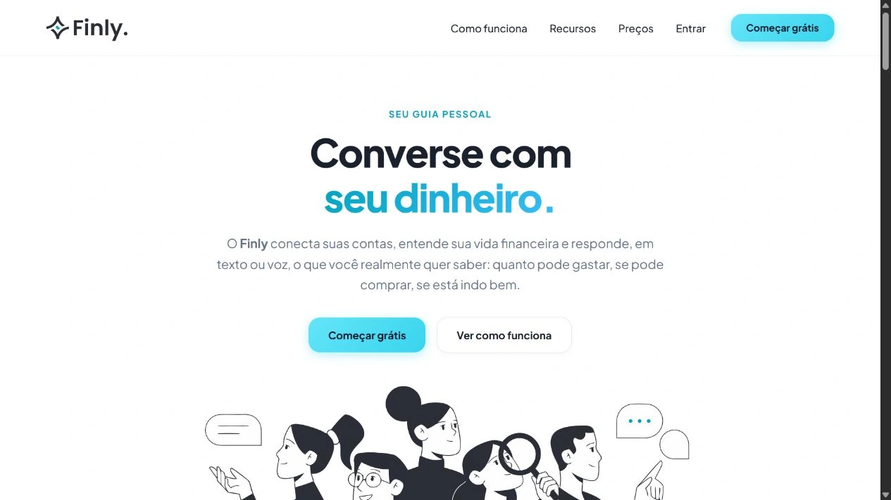
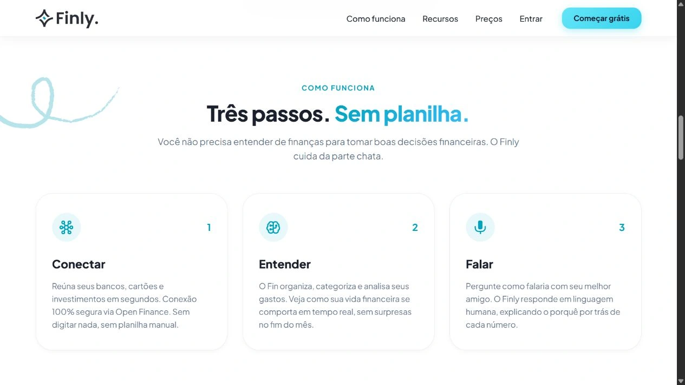
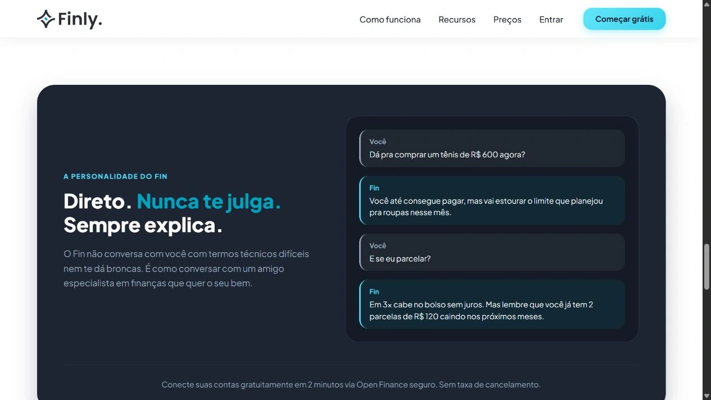
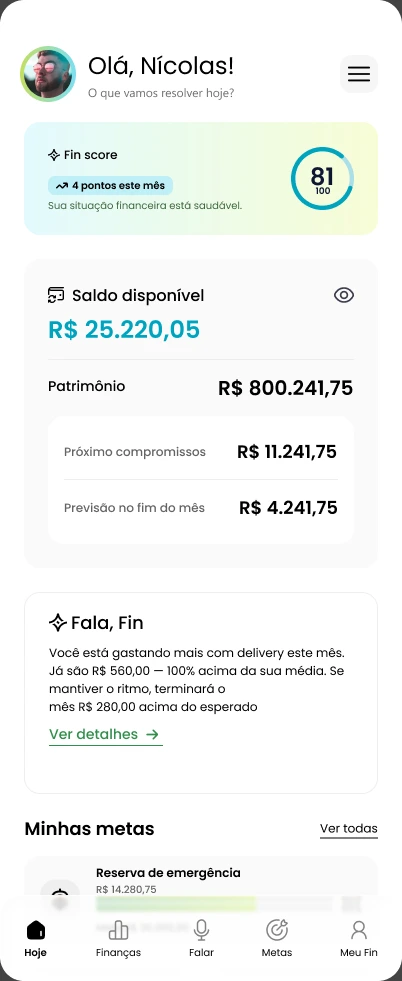
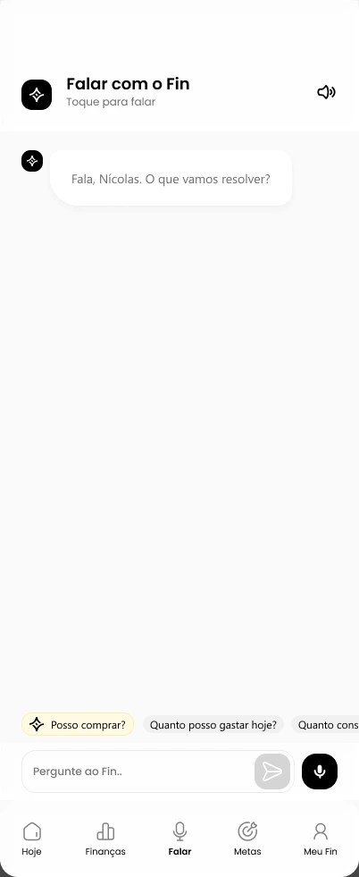
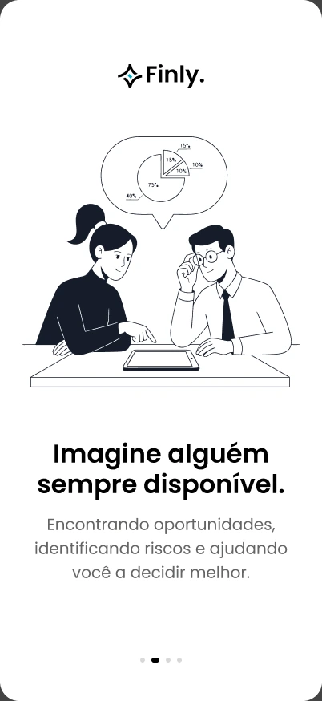
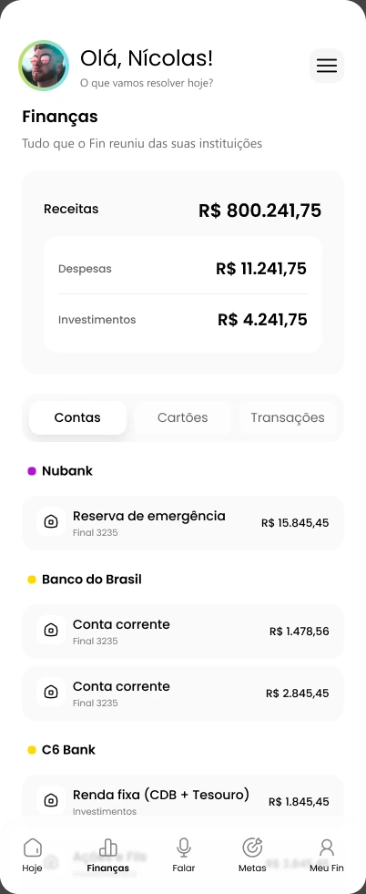
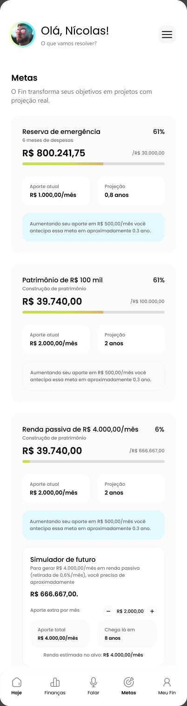
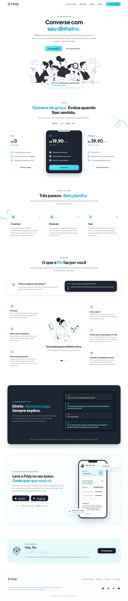
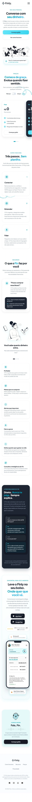

Seu dinheiro.
Uma boa conversa.
Um projeto de assistente financeiro que coloca a conversa no centro da experiência. O case reúne as interfaces do aplicativo e a versão publicada do site, apresentada com a marca Finly.

A versão publicada do site apresenta a proposta, o funcionamento e os pontos de contato do produto.
Uma apresentação
para começar a conversa.
O site organiza a apresentação do assistente em proposta, planos, funcionamento, recursos e exemplos de conversa. A navegação por âncoras conecta as seções, com chamadas recorrentes para conhecer as opções de acesso.
A interface usa Plus Jakarta Sans, superfícies claras, ilustrações em preto e branco e acentos em ciano. Os exemplos de diálogo aproximam a linguagem do produto de situações cotidianas, antes do contato com as telas do aplicativo.
VISITAR SITE FINLY
Três cartões apresentam a sequência de uso descrita no site.

Um exemplo de conversa apresenta o tom de voz e a hierarquia das mensagens.
Menos distância
entre perguntar
e entender.
O panorama financeiro convive com uma forma direta de interação: perguntar ao Fin.
Explore as interfaces

Finanças em uma
linguagem próxima.
A proposta apresentada nas telas é aproximar informação financeira de perguntas cotidianas. Quanto posso gastar? Como estão minhas metas? Qual o impacto de uma compra? O projeto explora texto e voz como portas de entrada para essas interações.
Na interface, saldo, compromissos e objetivos oferecem contexto para a conversa. O aplicativo é apresentado pelas interfaces originais do projeto, enquanto o site aparece em capturas da versão publicada.

Antes de usar,
compreender.
O onboarding usa ilustrações, mensagens curtas e progressão em etapas para apresentar o papel do assistente. Em seguida, o fluxo pergunta sobre objetivos e instituições financeiras.
A linguagem visual combina superfícies claras, ilustrações em preto e branco e acentos em ciano. O site publicado usa a assinatura Finly. As interfaces de aplicativo deste case preservam os materiais originais do projeto.
Uma proposta.
Diferentes pontos de contato.
Uma visão de saldo, compromissos, alertas e metas.

Informações organizadas para consultar as contas.

Objetivos apresentados com acompanhamento de progresso.
Telas do projeto. Role dentro de cada apresentação para explorar o conteúdo.

Captura completa do site publicado como Finly. Role dentro da apresentação para percorrer a página.

Captura completa da versão mobile do site Finly. Role dentro da apresentação para explorar o conteúdo.
O convite é simples:
“Fala, Fin.”
A tela de conversa dá destaque ao campo de mensagem e ao microfone. Perguntas sugeridas ajudam a iniciar a interação. Na navegação inferior, Falar aparece junto de Hoje, Finanças, Metas e Meu Fin.
O site explica a proposta antes do uso. O aplicativo apresenta os dados e os pontos de interação. Juntos, os dois materiais permitem observar como uma mesma ideia se expressa na comunicação e na interface.